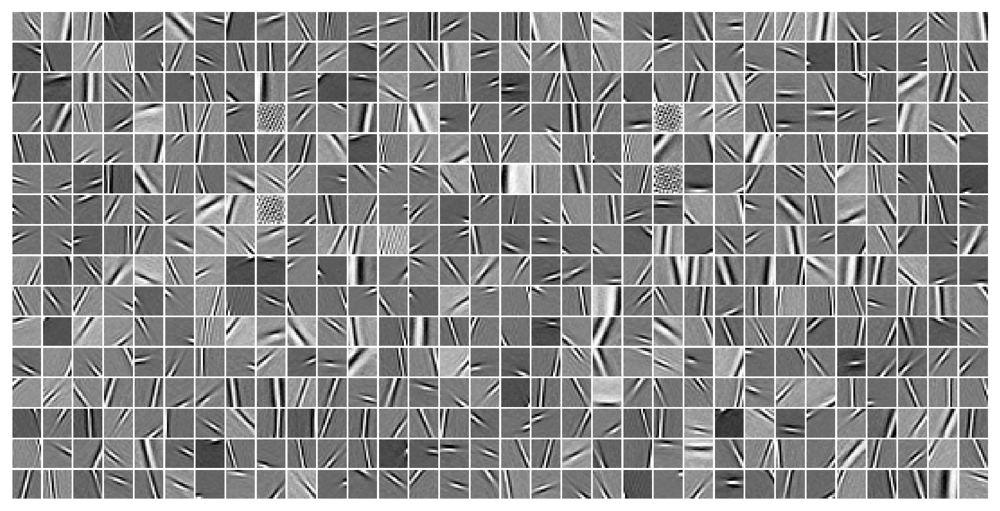
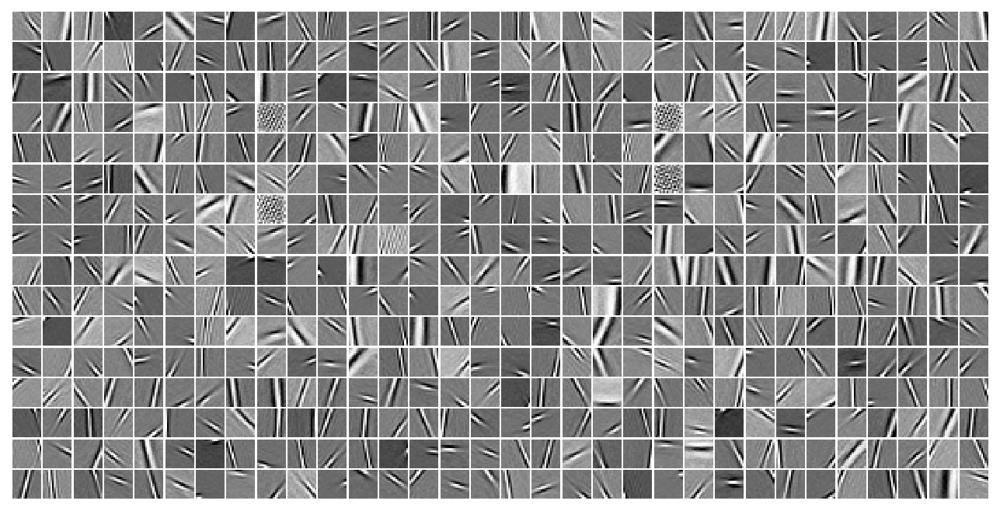
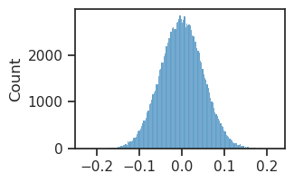
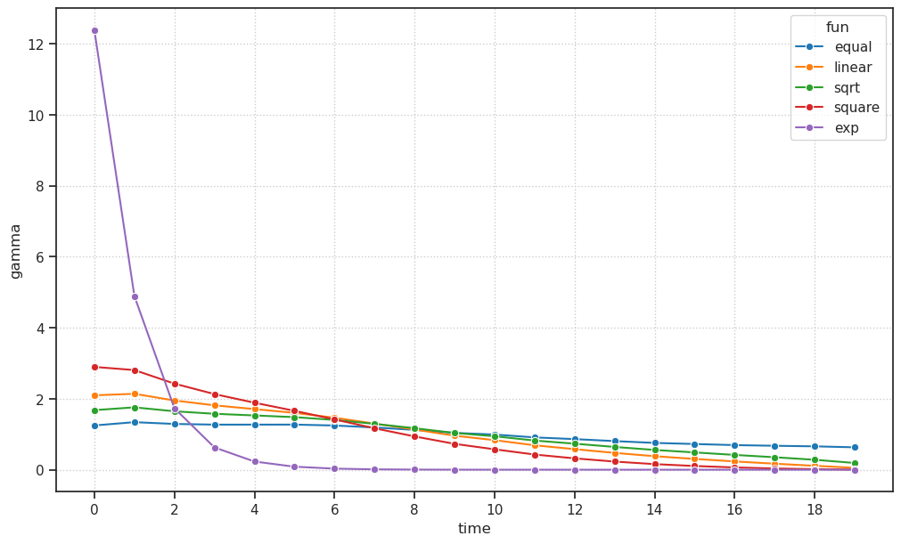
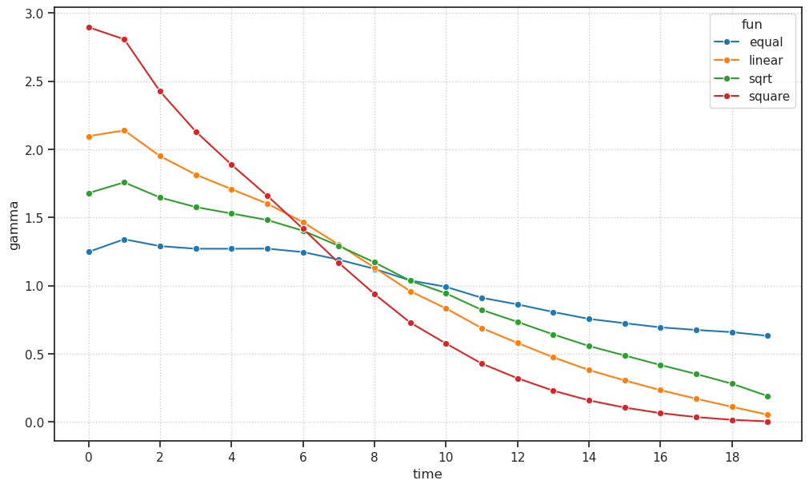
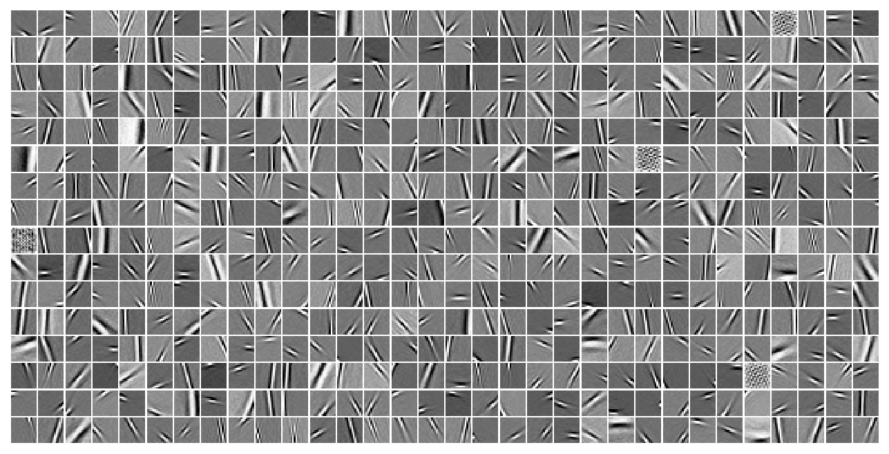
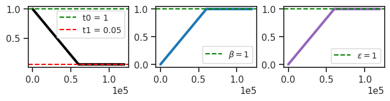
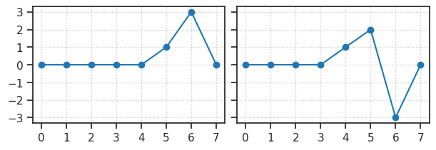
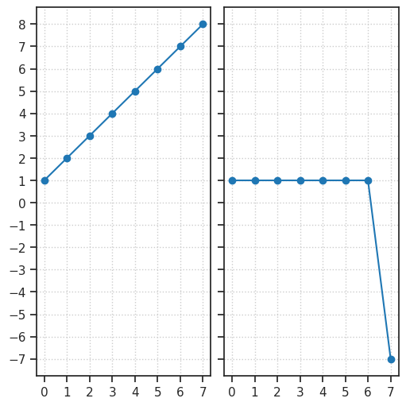

tmp — aug24#
Motivation: scratch notebook
Show code cell source
# HIDE CODE
import os, sys
from IPython.display import display
# tmp & extras dir
git_dir = os.path.join(os.environ['HOME'], 'Dropbox/git')
extras_dir = os.path.join(git_dir, 'jb-vae/_extras')
fig_base_dir = os.path.join(git_dir, 'jb-vae/figs')
tmp_dir = os.path.join(git_dir, 'jb-vae/tmp')
# GitHub
# sys.path.insert(0, os.path.join(git_dir, '_PoissonVAE'))
sys.path.insert(0, os.path.join(git_dir, '_IterativeVAE'))
from figures.fighelper import *
from vae.train_vae import *
# warnings, tqdm, & style
warnings.filterwarnings('ignore', category=DeprecationWarning)
warnings.filterwarnings('ignore', category=FutureWarning)
warnings.filterwarnings('ignore', category=UserWarning)
from rich.jupyter import print
%matplotlib inline
set_style()
device_idx = 2
device = f'cuda:{device_idx}'
print(f"host: {os.uname().nodename}")
host: mach
model_type = 'poisson'
from vae.config_vae import _ENC_CHOICES, _DEC_CHOICES
for enc, dec in itertools.product(_ENC_CHOICES, _DEC_CHOICES):
archi = f"{enc}|{dec}"
cfg_vae, cfg_tr = default_configs('vH16', model_type, archi)
vae = HIPVAE(CFG_CLASSES[model_type](**cfg_vae))
tr = TrainerVAE(vae, ConfigTrainVAE(**cfg_tr), device=device)
print('\n')
print('-' * 80)
print(archi)
print_num_params(vae.input_layer)
x = next(iter(tr.dl_trn))[0]
with torch.no_grad():
output = vae(x)
--------------------------------------------------------------------------------
lin|lin
+--------------+------------+ | Module Name | Num Params | +--------------+------------+ | PoissonLayer | 263.2 K | | ——— | ——— | | fc_enc | 131.1 K | | fc_dec | 131.1 K | +--------------+------------+
--------------------------------------------------------------------------------
lin|mlp
+--------------+------------+ | Module Name | Num Params | +--------------+------------+ | PoissonLayer | 27.5 K | | ——— | ——— | | fc_enc | 2.6 K | | dec | 24.9 K | +--------------+------------+
--------------------------------------------------------------------------------
lin|conv
+--------------+------------+ | Module Name | Num Params | +--------------+------------+ | PoissonLayer | 323.4 K | | ——— | ——— | | fc_enc | 2.6 K | | fc_dec | 20.5 K | | dec | 300.3 K | +--------------+------------+
--------------------------------------------------------------------------------
lin|deconv
+--------------+------------+ | Module Name | Num Params | +--------------+------------+ | PoissonLayer | 187.0 K | | ——— | ——— | | fc_enc | 2.6 K | | fc_dec | 20.5 K | | dec | 164.0 K | +--------------+------------+
--------------------------------------------------------------------------------
mlp|lin
+--------------+------------+ | Module Name | Num Params | +--------------+------------+ | PoissonLayer | 553.5 K | | ——— | ——— | | enc | 421.4 K | | fc_dec | 131.1 K | +--------------+------------+
--------------------------------------------------------------------------------
mlp|mlp
+--------------+------------+ | Module Name | Num Params | +--------------+------------+ | PoissonLayer | 49.8 K | | ——— | ——— | | enc | 24.9 K | | dec | 24.9 K | +--------------+------------+
--------------------------------------------------------------------------------
mlp|conv
+--------------+------------+ | Module Name | Num Params | +--------------+------------+ | PoissonLayer | 345.7 K | | ——— | ——— | | enc | 24.9 K | | fc_dec | 20.5 K | | dec | 300.3 K | +--------------+------------+
--------------------------------------------------------------------------------
mlp|deconv
+--------------+------------+ | Module Name | Num Params | +--------------+------------+ | PoissonLayer | 209.4 K | | ——— | ——— | | enc | 24.9 K | | fc_dec | 20.5 K | | dec | 164.0 K | +--------------+------------+
--------------------------------------------------------------------------------
conv|lin
+--------------+------------+ | Module Name | Num Params | +--------------+------------+ | PoissonLayer | 1.9 Mil | | ——— | ——— | | stem | 320 | | enc | 680.6 K | | fc_enc | 1.1 Mil | | fc_dec | 131.1 K | +--------------+------------+
--------------------------------------------------------------------------------
conv|mlp
+--------------+------------+ | Module Name | Num Params | +--------------+------------+ | PoissonLayer | 726.3 K | | ——— | ——— | | stem | 320 | | enc | 680.6 K | | fc_enc | 20.5 K | | dec | 24.9 K | +--------------+------------+
--------------------------------------------------------------------------------
conv|conv
+--------------+------------+ | Module Name | Num Params | +--------------+------------+ | PoissonLayer | 1.0 Mil | | ——— | ——— | | stem | 320 | | enc | 680.6 K | | fc_enc | 20.5 K | | fc_dec | 20.5 K | | dec | 300.3 K | +--------------+------------+
--------------------------------------------------------------------------------
conv|deconv
+--------------+------------+ | Module Name | Num Params | +--------------+------------+ | PoissonLayer | 885.9 K | | ——— | ——— | | stem | 320 | | enc | 680.6 K | | fc_enc | 20.5 K | | fc_dec | 20.5 K | | dec | 164.0 K | +--------------+------------+
--------------------------------------------------------------------------------
jac|lin
+--------------+------------+ | Module Name | Num Params | +--------------+------------+ | PoissonLayer | 132.1 K | | ——— | ——— | | fc_dec | 131.1 K | +--------------+------------+
--------------------------------------------------------------------------------
jac|mlp
+--------------+------------+ | Module Name | Num Params | +--------------+------------+ | PoissonLayer | 24.9 K | | ——— | ——— | | dec | 24.9 K | +--------------+------------+
--------------------------------------------------------------------------------
jac|conv
+--------------+------------+ | Module Name | Num Params | +--------------+------------+ | PoissonLayer | 320.8 K | | ——— | ——— | | fc_dec | 20.5 K | | dec | 300.3 K | +--------------+------------+
--------------------------------------------------------------------------------
jac|deconv
+--------------+------------+ | Module Name | Num Params | +--------------+------------+ | PoissonLayer | 184.5 K | | ——— | ——— | | fc_dec | 20.5 K | | dec | 164.0 K | +--------------+------------+
from base.common import *
def _build_deconv_dec(nch: int, kws: dict):
return nn.Sequential(
UnFlatten(nch),
nn.ConvTranspose2d(nch, nch // 2, kernel_size=4, stride=2, padding=1),
get_act_fn(kws['act_fn'], inplace=True),
nn.ConvTranspose2d(nch // 2, nch // 4, kernel_size=4, stride=2, padding=1),
get_act_fn(kws['act_fn'], inplace=True),
nn.ConvTranspose2d(nch // 4, nch // 8, kernel_size=4, stride=2, padding=1),
get_act_fn(kws['act_fn'], inplace=True),
nn.ConvTranspose2d(nch // 8, 1, (1, 1), stride=1, padding=0),
)
layer = _build_deconv_dec(128, {'act_fn': 'relu'})
spat_dim = 4
x = torch.randn(123, 128 * spat_dim ** 2)
y = layer(x)
y.shape
torch.Size([123, 1, 32, 32])
Load model to analyze#
# model_name = 'poisson_uniform_c(-4)_vH16_t-20_z-[512]_k-32_<jac|lin>'
# fit_name = 'mc_b500-ep600-lr(0.002)_beta(10:0x0.5)_temp(0.05:lin-0.5)_gr(500)_(2024_08_29,12:13)'
model_name = 'poisson_uniform_c(-4)_vH16_t-5_z-[512]_k-32_<jac|lin>'
fit_name = 'mc_b500-ep600-lr(0.002)_beta(3:0x0.5)_temp(0.05:lin-0.5)_gr(500)_(2024_08_29,18:12)'
tr, meta = load_model(model_name, fit_name, device=device, strict=False)
print(meta['checkpoint'])
600
self = tr.model.input_layer
print(self)
PoissonLayer(dim=512, input_dim=16, temp=0.05, n_exp=83, beta=1, eps=1)
x = next(iter(tr.dl_vld))[0]
output = tr.model(x)
output = output.stack()
list(output)
['recon', 'dist', 'spks', 'ff', 'fb', 'loss_kl', 'loss_recon']
model_type = 'poisson'
cfg_vae, cfg_tr = default_configs('MNIST', model_type, 'jac|deconv')
cfg_vae['n_latents'] = 50
cfg_vae['init_scale'] = 1e-2
cfg_vae['seq_len'] = 5
cfg_tr['lr'] = 2e-3
cfg_tr['epochs'] = 100
cfg_tr['batch_size'] = 60
cfg_tr['kl_beta'] = 1.0
vae = HIPVAE(CFG_CLASSES[model_type](**cfg_vae))
vae.input_layer.fc_enc = None
tr = TrainerVAE(vae, ConfigTrainVAE(**cfg_tr), device=device)
vae.print()
+-------------+------------+ | Module Name | Num Params | +-------------+------------+ | HIPVAE | 399.6 K | | ——— | ——— | | layers.L_0 | 399.6 K | +-------------+------------+
x = next(iter(tr.dl_trn))[0]
x = x.flatten(start_dim=1)
self = tr.model.input_layer
self.reset_state(len(x))
dist, spks, pred = self.generate(0.2, True)
res = x - pred
jacobian = self.jacobian(spks).squeeze()
jacobian.shape
torch.Size([60, 784, 50])
spks.shape
torch.Size([60, 50])
vae(x)
---------------------------------------------------------------------------
OutOfMemoryError Traceback (most recent call last)
Cell In[10], line 1
----> 1 vae(x)
File ~/anaconda3/lib/python3.11/site-packages/torch/nn/modules/module.py:1532, in Module._wrapped_call_impl(self, *args, **kwargs)
1530 return self._compiled_call_impl(*args, **kwargs) # type: ignore[misc]
1531 else:
-> 1532 return self._call_impl(*args, **kwargs)
File ~/anaconda3/lib/python3.11/site-packages/torch/nn/modules/module.py:1541, in Module._call_impl(self, *args, **kwargs)
1536 # If we don't have any hooks, we want to skip the rest of the logic in
1537 # this function, and just call forward.
1538 if not (self._backward_hooks or self._backward_pre_hooks or self._forward_hooks or self._forward_pre_hooks
1539 or _global_backward_pre_hooks or _global_backward_hooks
1540 or _global_forward_hooks or _global_forward_pre_hooks):
-> 1541 return forward_call(*args, **kwargs)
1543 try:
1544 result = None
File ~/Dropbox/git/_IterativeVAE/vae/vae.py:41, in HIPVAE.forward(self, x, temp, stochastic, seq, override_x, hard)
39 for i, (k, layer) in layers_inverted:
40 if i == 0:
---> 41 ff[k] = layer(_x, **kws_ff).du_ff
42 else:
43 k_below = _shift_key(k, 1)
File ~/anaconda3/lib/python3.11/site-packages/torch/nn/modules/module.py:1532, in Module._wrapped_call_impl(self, *args, **kwargs)
1530 return self._compiled_call_impl(*args, **kwargs) # type: ignore[misc]
1531 else:
-> 1532 return self._call_impl(*args, **kwargs)
File ~/anaconda3/lib/python3.11/site-packages/torch/nn/modules/module.py:1541, in Module._call_impl(self, *args, **kwargs)
1536 # If we don't have any hooks, we want to skip the rest of the logic in
1537 # this function, and just call forward.
1538 if not (self._backward_hooks or self._backward_pre_hooks or self._forward_hooks or self._forward_pre_hooks
1539 or _global_backward_pre_hooks or _global_backward_hooks
1540 or _global_forward_hooks or _global_forward_pre_hooks):
-> 1541 return forward_call(*args, **kwargs)
1543 try:
1544 result = None
File ~/Dropbox/git/_IterativeVAE/vae/layers.py:40, in PoissonLayer.forward(self, x, temp, stochastic, residual)
38 # (2) ff pass
39 if residual: # T > 0
---> 40 du_ff = self.encode(x - pred, spks)
41 else: # T = 0, (effectively: pred = 0)
42 du_ff = self.encode(x, spks)
File ~/Dropbox/git/_IterativeVAE/vae/layers.py:51, in PoissonLayer.encode(self, x, spks)
49 du_ff = F.linear(x, jacobian)
50 else:
---> 51 jacobian = self.jacobian(spks).squeeze()
52 du_ff = torch.einsum('bmk, bm -> bk', jacobian, x)
53 else:
File ~/anaconda3/lib/python3.11/site-packages/torch/_functorch/apis.py:188, in vmap.<locals>.wrapped(*args, **kwargs)
187 def wrapped(*args, **kwargs):
--> 188 return vmap_impl(func, in_dims, out_dims, randomness, chunk_size, *args, **kwargs)
File ~/anaconda3/lib/python3.11/site-packages/torch/_functorch/vmap.py:281, in vmap_impl(func, in_dims, out_dims, randomness, chunk_size, *args, **kwargs)
277 return _chunked_vmap(func, flat_in_dims, chunks_flat_args,
278 args_spec, out_dims, randomness, **kwargs)
280 # If chunk_size is not specified.
--> 281 return _flat_vmap(
282 func, batch_size, flat_in_dims, flat_args, args_spec, out_dims, randomness, **kwargs
283 )
File ~/anaconda3/lib/python3.11/site-packages/torch/_functorch/vmap.py:47, in doesnt_support_saved_tensors_hooks.<locals>.fn(*args, **kwargs)
44 @functools.wraps(f)
45 def fn(*args, **kwargs):
46 with torch.autograd.graph.disable_saved_tensors_hooks(message):
---> 47 return f(*args, **kwargs)
File ~/anaconda3/lib/python3.11/site-packages/torch/_functorch/vmap.py:403, in _flat_vmap(func, batch_size, flat_in_dims, flat_args, args_spec, out_dims, randomness, **kwargs)
401 with vmap_increment_nesting(batch_size, randomness) as vmap_level:
402 batched_inputs = _create_batched_inputs(flat_in_dims, flat_args, vmap_level, args_spec)
--> 403 batched_outputs = func(*batched_inputs, **kwargs)
404 return _unwrap_batched(batched_outputs, out_dims, vmap_level, batch_size, func)
File ~/anaconda3/lib/python3.11/site-packages/torch/_functorch/eager_transforms.py:1163, in jacfwd.<locals>.wrapper_fn(*args)
1160 _, jvp_out = output
1161 return jvp_out
-> 1163 results = vmap(push_jvp, randomness=randomness)(basis)
1164 if has_aux:
1165 results, aux = results
File ~/anaconda3/lib/python3.11/site-packages/torch/_functorch/apis.py:188, in vmap.<locals>.wrapped(*args, **kwargs)
187 def wrapped(*args, **kwargs):
--> 188 return vmap_impl(func, in_dims, out_dims, randomness, chunk_size, *args, **kwargs)
File ~/anaconda3/lib/python3.11/site-packages/torch/_functorch/vmap.py:281, in vmap_impl(func, in_dims, out_dims, randomness, chunk_size, *args, **kwargs)
277 return _chunked_vmap(func, flat_in_dims, chunks_flat_args,
278 args_spec, out_dims, randomness, **kwargs)
280 # If chunk_size is not specified.
--> 281 return _flat_vmap(
282 func, batch_size, flat_in_dims, flat_args, args_spec, out_dims, randomness, **kwargs
283 )
File ~/anaconda3/lib/python3.11/site-packages/torch/_functorch/vmap.py:47, in doesnt_support_saved_tensors_hooks.<locals>.fn(*args, **kwargs)
44 @functools.wraps(f)
45 def fn(*args, **kwargs):
46 with torch.autograd.graph.disable_saved_tensors_hooks(message):
---> 47 return f(*args, **kwargs)
File ~/anaconda3/lib/python3.11/site-packages/torch/_functorch/vmap.py:403, in _flat_vmap(func, batch_size, flat_in_dims, flat_args, args_spec, out_dims, randomness, **kwargs)
401 with vmap_increment_nesting(batch_size, randomness) as vmap_level:
402 batched_inputs = _create_batched_inputs(flat_in_dims, flat_args, vmap_level, args_spec)
--> 403 batched_outputs = func(*batched_inputs, **kwargs)
404 return _unwrap_batched(batched_outputs, out_dims, vmap_level, batch_size, func)
File ~/anaconda3/lib/python3.11/site-packages/torch/_functorch/eager_transforms.py:1154, in jacfwd.<locals>.wrapper_fn.<locals>.push_jvp(basis)
1153 def push_jvp(basis):
-> 1154 output = _jvp_with_argnums(func, args, basis, argnums=argnums, has_aux=has_aux)
1155 # output[0] is the output of `func(*args)`
1156 error_if_complex("jacfwd", output[0], is_input=False)
File ~/anaconda3/lib/python3.11/site-packages/torch/_functorch/vmap.py:47, in doesnt_support_saved_tensors_hooks.<locals>.fn(*args, **kwargs)
44 @functools.wraps(f)
45 def fn(*args, **kwargs):
46 with torch.autograd.graph.disable_saved_tensors_hooks(message):
---> 47 return f(*args, **kwargs)
File ~/anaconda3/lib/python3.11/site-packages/torch/_functorch/eager_transforms.py:1000, in _jvp_with_argnums(func, primals, tangents, argnums, strict, has_aux)
998 primals = _wrap_all_tensors(primals, level)
999 duals = _replace_args(primals, duals, argnums)
-> 1000 result_duals = func(*duals)
1001 if has_aux:
1002 if not (isinstance(result_duals, tuple) and len(result_duals) == 2):
File ~/Dropbox/git/_IterativeVAE/vae/layers.py:68, in PoissonLayer.decode(self, z)
66 elif self._cfg.dec_type in ['conv', 'deconv']:
67 z = self.fc_dec(z)
---> 68 z = self.dec(z)
69 return z.flatten(start_dim=1)
70 else:
File ~/anaconda3/lib/python3.11/site-packages/torch/nn/modules/module.py:1532, in Module._wrapped_call_impl(self, *args, **kwargs)
1530 return self._compiled_call_impl(*args, **kwargs) # type: ignore[misc]
1531 else:
-> 1532 return self._call_impl(*args, **kwargs)
File ~/anaconda3/lib/python3.11/site-packages/torch/nn/modules/module.py:1541, in Module._call_impl(self, *args, **kwargs)
1536 # If we don't have any hooks, we want to skip the rest of the logic in
1537 # this function, and just call forward.
1538 if not (self._backward_hooks or self._backward_pre_hooks or self._forward_hooks or self._forward_pre_hooks
1539 or _global_backward_pre_hooks or _global_backward_hooks
1540 or _global_forward_hooks or _global_forward_pre_hooks):
-> 1541 return forward_call(*args, **kwargs)
1543 try:
1544 result = None
File ~/anaconda3/lib/python3.11/site-packages/torch/nn/modules/container.py:217, in Sequential.forward(self, input)
215 def forward(self, input):
216 for module in self:
--> 217 input = module(input)
218 return input
File ~/anaconda3/lib/python3.11/site-packages/torch/nn/modules/module.py:1532, in Module._wrapped_call_impl(self, *args, **kwargs)
1530 return self._compiled_call_impl(*args, **kwargs) # type: ignore[misc]
1531 else:
-> 1532 return self._call_impl(*args, **kwargs)
File ~/anaconda3/lib/python3.11/site-packages/torch/nn/modules/module.py:1541, in Module._call_impl(self, *args, **kwargs)
1536 # If we don't have any hooks, we want to skip the rest of the logic in
1537 # this function, and just call forward.
1538 if not (self._backward_hooks or self._backward_pre_hooks or self._forward_hooks or self._forward_pre_hooks
1539 or _global_backward_pre_hooks or _global_backward_hooks
1540 or _global_forward_hooks or _global_forward_pre_hooks):
-> 1541 return forward_call(*args, **kwargs)
1543 try:
1544 result = None
File ~/anaconda3/lib/python3.11/site-packages/torch/nn/modules/conv.py:952, in ConvTranspose2d.forward(self, input, output_size)
947 num_spatial_dims = 2
948 output_padding = self._output_padding(
949 input, output_size, self.stride, self.padding, self.kernel_size, # type: ignore[arg-type]
950 num_spatial_dims, self.dilation) # type: ignore[arg-type]
--> 952 return F.conv_transpose2d(
953 input, self.weight, self.bias, self.stride, self.padding,
954 output_padding, self.groups, self.dilation)
OutOfMemoryError: CUDA out of memory. Tried to allocate 2.99 GiB. GPU has a total capacity of 47.41 GiB of which 316.12 MiB is free. Including non-PyTorch memory, this process has 47.08 GiB memory in use. Of the allocated memory 44.52 GiB is allocated by PyTorch, and 2.06 GiB is reserved by PyTorch but unallocated. If reserved but unallocated memory is large try setting PYTORCH_CUDA_ALLOC_CONF=expandable_segments:True to avoid fragmentation. See documentation for Memory Management (https://pytorch.org/docs/stable/notes/cuda.html#environment-variables)
vae.print()
print(f"{vae.cfg.name()}\n{tr.cfg.name()}_({vae.timestamp})\n")
tr.show_schedules()
+-------------+------------+ | Module Name | Num Params | +-------------+------------+ | HIPVAE | 131.6 K | | ——— | ——— | | layers.L_0 | 131.6 K | +-------------+------------+
poisson_uniform_c(-4)_vH16_t-1_z-[512]_<lin|lin> mc_b500-ep1000-lr(0.002)_beta(1:0x0.5)_temp(0.05:lin-0.5)_gr(500)_(2024_08_28,18:23)
print_num_params(vae.input_layer)
+--------------+------------+ | Module Name | Num Params | +--------------+------------+ | PoissonLayer | 131.6 K | | ——— | ——— | | fc_dec | 131.1 K | +--------------+------------+
comment = f"jacobian"
fit_name = f"{comment}_{tr.cfg.name()}"
tr.train(fit_name=fit_name)
epoch # 1000, avg loss: 167.010530: 100%|████████████████████████████████████████████████████| 1000/1000 [1:11:48<00:00, 4.31s/it]
model_name = 'poisson_uniform_c(-4)_vH16_t-20_z-[512]_<lin|lin>'
fit_name = 'bal-None_mc_b500-ep300-lr(0.002)_beta(80:0x0.5)_temp(0.01:lin-0.5)_gr(500)_(2024_08_27,14:50)'
tr, meta = load_model(model_name=model_name, fit_name=fit_name, device=device)
tr.model.show('dec', dpi=300);

x = next(iter(tr.dl_vld))[0]
self.reset_state(len(x))
dist, spks, pred = self.generate(0.2, True)
residual = x - pred
residual = residual.flatten(start_dim=1)
jacobian = torch.autograd.functional.jacobian(
func=tr.model.input_layer.fc_dec,
inputs=tr.to(torch.randn(512)), # z[123, -1, :],
)
du = F.linear(residual, jacobian.T)
self.update_state(du)
dist, spks, pred = self.generate(0.2, True)
y = self.decode(spks)
loss_mse = torch.linalg.norm(x - y)
loss_mse.backward()
output = tr.model(x)
output = output.stack()
list(output)
['recon', 'dist', 'spks', 'ff', 'fb', 'loss_kl', 'loss_recon']
z = output['spks']
z.shape
torch.Size([500, 20, 512])
%%time
jacobian = torch.autograd.functional.jacobian(
func=tr.model.input_layer.decode,
inputs=tr.to(torch.randn(512)),
)
jacobian.shape
CPU times: user 101 ms, sys: 4.27 ms, total: 105 ms
Wall time: 105 ms
torch.Size([1, 1, 16, 16, 512])
tr.model.input_layer.decode(tr.to(torch.randn(512))).shape
torch.Size([1, 1, 16, 16])
%%time
jacobian = torch.autograd.functional.jacobian(
func=tr.model.input_layer.fc_dec,
inputs=tr.to(torch.randn(512)), # z[123, -1, :],
)
jacobian.shape
CPU times: user 94.1 ms, sys: 6.09 ms, total: 100 ms
Wall time: 99.9 ms
torch.Size([256, 512])
tr.model.input_layer.fc_enc.weight.shape
torch.Size([512, 256])
x2p = tonp(jacobian).T.reshape(512, 16, 16)
from figures.imgs import plot_weights
plot_weights(x2p);

model_type = 'poisson'
cfg_vae, cfg_tr = default_configs('vH16', model_type, 'lin|lin')
vae = HIPVAE(CFG_CLASSES[model_type](**cfg_vae))
tr = TrainerVAE(vae, ConfigTrainVAE(**cfg_tr), device=device)
sns.histplot(tonp(tr.model.input_layer.fc_enc.weight).ravel());

kl_balancer_coeff(5, 'equal'), kl_balancer_coeff(5, 'linear'), kl_balancer_coeff(5, 'square'), kl_balancer_coeff(5, 'exp')
(tensor([1., 1., 1., 1., 1.]),
tensor([5., 4., 3., 2., 1.]),
tensor([25., 16., 9., 4., 1.]),
tensor([54.5982, 20.0855, 7.3891, 2.7183, 1.0000]))
model_name = 'poisson_uniform_c(-4)_vH16_t-20_z-[512]_<lin|lin>'
fit_name = 'bal-square_mc_b500-ep300-lr(0.002)_beta(80:0x0.5)_temp(0.05:lin-0.5)_gr(500)_(2024_08_26,16:18)'
tr, meta = load_model(model_name=model_name, fit_name=fit_name, device=device)
print(meta)
{ 'timestamp': '2024_08_26,16:18', 'checkpoint': 250, 'global_step': 51500, 'root': '/home/hadi/Projects/PoissonVAE/models/poisson_uniform_c(-4)_vH16_t-20_z-[512]_<lin|lin>/bal-square_mc_b500-ep300-l r(0.002)_beta(80:0x0.5)_temp(0.05:lin-0.5)_gr(500)_(2024_08_26,16:18)', 'file': 'HIPVAE+TrainerVAE-0250_(2024_08_26,17:34).pt' }
with torch.inference_mode():
x = next(iter(tr.dl_vld))[0]
dist, kl, recon_batch = tr._fun(x)
kl_batch = torch.sum(kl, dim=2)
kl_batch.shape, recon_batch.shape
(torch.Size([500, 20]), torch.Size([500, 20]))
d2p = []
for fun in ['equal', 'linear', 'sqrt', 'square', 'exp']:
tr.alphas = kl_balancer_coeff(tr.model.cfg.seq_len, fun)
tr.alphas = tr.to(tr.alphas)
kl_balanced, gamma = kl_balancer(
kl_batch=kl_batch,
alpha=tr.alphas,
balance=True,
)
d2p.append({
'fun': [fun] * len(gamma),
'time': range(len(gamma)),
'gamma': tonp(gamma),
})
d2p = pd.DataFrame(merge_dicts(d2p))
fig, ax = create_figure(1, 1, (10, 6))
sns.lineplot(data=d2p, x='time', y='gamma', hue='fun', marker='o', ax=ax)
ax.locator_params(axis='x', nbins=15)
ax.grid()
plt.show()

fig, ax = create_figure(1, 1, (10, 6))
sns.lineplot(
data=d2p.loc[d2p['fun'] != 'exp'],
x='time',
y='gamma',
hue='fun',
marker='o',
ax=ax,
)
ax.locator_params(axis='x', nbins=15)
ax.grid()
plt.show()

gamma.sum()
tensor(20., device='cuda:0')
tr.model.show('dec');

kl_time = torch.mean(torch.sum(kl, dim=-1), dim=0)
kl_time.shape
torch.Size([10])
balanced_kl, gamma, kl_vals = kl_balancer(
kl_all=kl_all,
alpha=self.alphas,
coeff=self.betas[gstep],
beta=self.cfg.kl_beta,
)
kl_vals = torch.mean(kl, dim=0)
kl_vals.shape
torch.Size([10, 512])
print(tr.model.input_layer)
PoissonLayer(dim=512, input_dim=16, temp=1, eps=0, n_exp=263)
tr.show_schedules()

with torch.inference_mode():
x = next(iter(tr.dl_vld))[0]
output = vae(x)
output = output.stack()
output['loss_kl'].shape, output['loss_recon'].shape
self = vae.input_layer
batch_size = 11
x = torch.zeros((batch_size, 512))
x[4] = torch.arange(1, 512 + 1)
x = tr.to(x)
x.shape
torch.Size([11, 512])
delta = F.pad(
input=x,
pad=self.pad,
mode='circular',
)
delta = F.conv1d(
input=delta.unsqueeze(1),
weight=self.conv_kernel,
).squeeze()
delta.shape
torch.Size([11, 512])
x[4]
tensor([ 1., 2., 3., 4., 5., 6., 7., 8., 9., 10., 11., 12.,
13., 14., 15., 16., 17., 18., 19., 20., 21., 22., 23., 24.,
25., 26., 27., 28., 29., 30., 31., 32., 33., 34., 35., 36.,
37., 38., 39., 40., 41., 42., 43., 44., 45., 46., 47., 48.,
49., 50., 51., 52., 53., 54., 55., 56., 57., 58., 59., 60.,
61., 62., 63., 64., 65., 66., 67., 68., 69., 70., 71., 72.,
73., 74., 75., 76., 77., 78., 79., 80., 81., 82., 83., 84.,
85., 86., 87., 88., 89., 90., 91., 92., 93., 94., 95., 96.,
97., 98., 99., 100., 101., 102., 103., 104., 105., 106., 107., 108.,
109., 110., 111., 112., 113., 114., 115., 116., 117., 118., 119., 120.,
121., 122., 123., 124., 125., 126., 127., 128., 129., 130., 131., 132.,
133., 134., 135., 136., 137., 138., 139., 140., 141., 142., 143., 144.,
145., 146., 147., 148., 149., 150., 151., 152., 153., 154., 155., 156.,
157., 158., 159., 160., 161., 162., 163., 164., 165., 166., 167., 168.,
169., 170., 171., 172., 173., 174., 175., 176., 177., 178., 179., 180.,
181., 182., 183., 184., 185., 186., 187., 188., 189., 190., 191., 192.,
193., 194., 195., 196., 197., 198., 199., 200., 201., 202., 203., 204.,
205., 206., 207., 208., 209., 210., 211., 212., 213., 214., 215., 216.,
217., 218., 219., 220., 221., 222., 223., 224., 225., 226., 227., 228.,
229., 230., 231., 232., 233., 234., 235., 236., 237., 238., 239., 240.,
241., 242., 243., 244., 245., 246., 247., 248., 249., 250., 251., 252.,
253., 254., 255., 256., 257., 258., 259., 260., 261., 262., 263., 264.,
265., 266., 267., 268., 269., 270., 271., 272., 273., 274., 275., 276.,
277., 278., 279., 280., 281., 282., 283., 284., 285., 286., 287., 288.,
289., 290., 291., 292., 293., 294., 295., 296., 297., 298., 299., 300.,
301., 302., 303., 304., 305., 306., 307., 308., 309., 310., 311., 312.,
313., 314., 315., 316., 317., 318., 319., 320., 321., 322., 323., 324.,
325., 326., 327., 328., 329., 330., 331., 332., 333., 334., 335., 336.,
337., 338., 339., 340., 341., 342., 343., 344., 345., 346., 347., 348.,
349., 350., 351., 352., 353., 354., 355., 356., 357., 358., 359., 360.,
361., 362., 363., 364., 365., 366., 367., 368., 369., 370., 371., 372.,
373., 374., 375., 376., 377., 378., 379., 380., 381., 382., 383., 384.,
385., 386., 387., 388., 389., 390., 391., 392., 393., 394., 395., 396.,
397., 398., 399., 400., 401., 402., 403., 404., 405., 406., 407., 408.,
409., 410., 411., 412., 413., 414., 415., 416., 417., 418., 419., 420.,
421., 422., 423., 424., 425., 426., 427., 428., 429., 430., 431., 432.,
433., 434., 435., 436., 437., 438., 439., 440., 441., 442., 443., 444.,
445., 446., 447., 448., 449., 450., 451., 452., 453., 454., 455., 456.,
457., 458., 459., 460., 461., 462., 463., 464., 465., 466., 467., 468.,
469., 470., 471., 472., 473., 474., 475., 476., 477., 478., 479., 480.,
481., 482., 483., 484., 485., 486., 487., 488., 489., 490., 491., 492.,
493., 494., 495., 496., 497., 498., 499., 500., 501., 502., 503., 504.,
505., 506., 507., 508., 509., 510., 511., 512.], device='cuda:1')
delta[4]
tensor([0., 0., 0., 0., 0., 0., 0., 0., 0., 0., 0., 0., 0., 0., 0., 0., 0., 0., 0., 0., 0., 0., 0., 0.,
0., 0., 0., 0., 0., 0., 0., 0., 0., 0., 0., 0., 0., 0., 0., 0., 0., 0., 0., 0., 0., 0., 0., 0.,
0., 0., 0., 0., 0., 0., 0., 0., 0., 0., 0., 0., 0., 0., 0., 0., 0., 0., 0., 0., 0., 0., 0., 0.,
0., 0., 0., 0., 0., 0., 0., 0., 0., 0., 0., 0., 0., 0., 0., 0., 0., 0., 0., 0., 0., 0., 0., 0.,
0., 0., 0., 0., 0., 0., 0., 0., 0., 0., 0., 0., 0., 0., 0., 0., 0., 0., 0., 0., 0., 0., 0., 0.,
0., 0., 0., 0., 0., 0., 0., 0., 0., 0., 0., 0., 0., 0., 0., 0., 0., 0., 0., 0., 0., 0., 0., 0.,
0., 0., 0., 0., 0., 0., 0., 0., 0., 0., 0., 0., 0., 0., 0., 0., 0., 0., 0., 0., 0., 0., 0., 0.,
0., 0., 0., 0., 0., 0., 0., 0., 0., 0., 0., 0., 0., 0., 0., 0., 0., 0., 0., 0., 0., 0., 0., 0.,
0., 0., 0., 0., 0., 0., 0., 0., 0., 0., 0., 0., 0., 0., 0., 0., 0., 0., 0., 0., 0., 0., 0., 0.,
0., 0., 0., 0., 0., 0., 0., 0., 0., 0., 0., 0., 0., 0., 0., 0., 0., 0., 0., 0., 0., 0., 0., 0.,
0., 0., 0., 0., 0., 0., 0., 0., 0., 0., 0., 0., 0., 0., 0., 0., 0., 0., 0., 0., 0., 0., 0., 0.,
0., 0., 0., 0., 0., 0., 0., 0., 0., 0., 0., 0., 0., 0., 0., 0., 0., 0., 0., 0., 0., 0., 0., 0.,
0., 0., 0., 0., 0., 0., 0., 0., 0., 0., 0., 0., 0., 0., 0., 0., 0., 0., 0., 0., 0., 0., 0., 0.,
0., 0., 0., 0., 0., 0., 0., 0., 0., 0., 0., 0., 0., 0., 0., 0., 0., 0., 0., 0., 0., 0., 0., 0.,
0., 0., 0., 0., 0., 0., 0., 0., 0., 0., 0., 0., 0., 0., 0., 0., 0., 0., 0., 0., 0., 0., 0., 0.,
0., 0., 0., 0., 0., 0., 0., 0., 0., 0., 0., 0., 0., 0., 0., 0., 0., 0., 0., 0., 0., 0., 0., 0.,
0., 0., 0., 0., 0., 0., 0., 0., 0., 0., 0., 0., 0., 0., 0., 0., 0., 0., 0., 0., 0., 0., 0., 0.,
0., 0., 0., 0., 0., 0., 0., 0., 0., 0., 0., 0., 0., 0., 0., 0., 0., 0., 0., 0., 0., 0., 0., 0.,
0., 0., 0., 0., 0., 0., 0., 0., 0., 0., 0., 0., 0., 0., 0., 0., 0., 0., 0., 0., 0., 0., 0., 0.,
0., 0., 0., 0., 0., 0., 0., 0., 0., 0., 0., 0., 0., 0., 0., 0., 0., 0., 0., 0., 0., 0., 0., 0.,
0., 0., 0., 0., 0., 0., 0., 0., 0., 0., 0., 0., 0., 0., 0., 0., 0., 0., 0., 0., 0., 0., 0., 0.,
0., 0., 0., 0., 0., 0., 0., 0.], device='cuda:1',
grad_fn=<SelectBackward0>)
conv_kernel = torch.tensor([1, 2, -2, 2, 1])
conv_kernel = torch.tensor(
data=conv_kernel,
dtype=torch.float,
).reshape(1, 1, -1).to(device)
self.conv_kernel = nn.Parameter(
data=conv_kernel,
requires_grad=True,
)
delta = F.pad(
input=x,
pad=self.pad,
mode='circular',
)
delta = F.conv1d(
input=delta.unsqueeze(1),
weight=self.conv_kernel,
).squeeze()
delta.shape
torch.Size([11, 512])
x[4]
tensor([ 1., 2., 3., 4., 5., 6., 7., 8., 9., 10., 11., 12.,
13., 14., 15., 16., 17., 18., 19., 20., 21., 22., 23., 24.,
25., 26., 27., 28., 29., 30., 31., 32., 33., 34., 35., 36.,
37., 38., 39., 40., 41., 42., 43., 44., 45., 46., 47., 48.,
49., 50., 51., 52., 53., 54., 55., 56., 57., 58., 59., 60.,
61., 62., 63., 64., 65., 66., 67., 68., 69., 70., 71., 72.,
73., 74., 75., 76., 77., 78., 79., 80., 81., 82., 83., 84.,
85., 86., 87., 88., 89., 90., 91., 92., 93., 94., 95., 96.,
97., 98., 99., 100., 101., 102., 103., 104., 105., 106., 107., 108.,
109., 110., 111., 112., 113., 114., 115., 116., 117., 118., 119., 120.,
121., 122., 123., 124., 125., 126., 127., 128., 129., 130., 131., 132.,
133., 134., 135., 136., 137., 138., 139., 140., 141., 142., 143., 144.,
145., 146., 147., 148., 149., 150., 151., 152., 153., 154., 155., 156.,
157., 158., 159., 160., 161., 162., 163., 164., 165., 166., 167., 168.,
169., 170., 171., 172., 173., 174., 175., 176., 177., 178., 179., 180.,
181., 182., 183., 184., 185., 186., 187., 188., 189., 190., 191., 192.,
193., 194., 195., 196., 197., 198., 199., 200., 201., 202., 203., 204.,
205., 206., 207., 208., 209., 210., 211., 212., 213., 214., 215., 216.,
217., 218., 219., 220., 221., 222., 223., 224., 225., 226., 227., 228.,
229., 230., 231., 232., 233., 234., 235., 236., 237., 238., 239., 240.,
241., 242., 243., 244., 245., 246., 247., 248., 249., 250., 251., 252.,
253., 254., 255., 256., 257., 258., 259., 260., 261., 262., 263., 264.,
265., 266., 267., 268., 269., 270., 271., 272., 273., 274., 275., 276.,
277., 278., 279., 280., 281., 282., 283., 284., 285., 286., 287., 288.,
289., 290., 291., 292., 293., 294., 295., 296., 297., 298., 299., 300.,
301., 302., 303., 304., 305., 306., 307., 308., 309., 310., 311., 312.,
313., 314., 315., 316., 317., 318., 319., 320., 321., 322., 323., 324.,
325., 326., 327., 328., 329., 330., 331., 332., 333., 334., 335., 336.,
337., 338., 339., 340., 341., 342., 343., 344., 345., 346., 347., 348.,
349., 350., 351., 352., 353., 354., 355., 356., 357., 358., 359., 360.,
361., 362., 363., 364., 365., 366., 367., 368., 369., 370., 371., 372.,
373., 374., 375., 376., 377., 378., 379., 380., 381., 382., 383., 384.,
385., 386., 387., 388., 389., 390., 391., 392., 393., 394., 395., 396.,
397., 398., 399., 400., 401., 402., 403., 404., 405., 406., 407., 408.,
409., 410., 411., 412., 413., 414., 415., 416., 417., 418., 419., 420.,
421., 422., 423., 424., 425., 426., 427., 428., 429., 430., 431., 432.,
433., 434., 435., 436., 437., 438., 439., 440., 441., 442., 443., 444.,
445., 446., 447., 448., 449., 450., 451., 452., 453., 454., 455., 456.,
457., 458., 459., 460., 461., 462., 463., 464., 465., 466., 467., 468.,
469., 470., 471., 472., 473., 474., 475., 476., 477., 478., 479., 480.,
481., 482., 483., 484., 485., 486., 487., 488., 489., 490., 491., 492.,
493., 494., 495., 496., 497., 498., 499., 500., 501., 502., 503., 504.,
505., 506., 507., 508., 509., 510., 511., 512.], device='cuda:1')
delta[4]
tensor([1540., 520., 12., 16., 20., 24., 28., 32., 36., 40.,
44., 48., 52., 56., 60., 64., 68., 72., 76., 80.,
84., 88., 92., 96., 100., 104., 108., 112., 116., 120.,
124., 128., 132., 136., 140., 144., 148., 152., 156., 160.,
164., 168., 172., 176., 180., 184., 188., 192., 196., 200.,
204., 208., 212., 216., 220., 224., 228., 232., 236., 240.,
244., 248., 252., 256., 260., 264., 268., 272., 276., 280.,
284., 288., 292., 296., 300., 304., 308., 312., 316., 320.,
324., 328., 332., 336., 340., 344., 348., 352., 356., 360.,
364., 368., 372., 376., 380., 384., 388., 392., 396., 400.,
404., 408., 412., 416., 420., 424., 428., 432., 436., 440.,
444., 448., 452., 456., 460., 464., 468., 472., 476., 480.,
484., 488., 492., 496., 500., 504., 508., 512., 516., 520.,
524., 528., 532., 536., 540., 544., 548., 552., 556., 560.,
564., 568., 572., 576., 580., 584., 588., 592., 596., 600.,
604., 608., 612., 616., 620., 624., 628., 632., 636., 640.,
644., 648., 652., 656., 660., 664., 668., 672., 676., 680.,
684., 688., 692., 696., 700., 704., 708., 712., 716., 720.,
724., 728., 732., 736., 740., 744., 748., 752., 756., 760.,
764., 768., 772., 776., 780., 784., 788., 792., 796., 800.,
804., 808., 812., 816., 820., 824., 828., 832., 836., 840.,
844., 848., 852., 856., 860., 864., 868., 872., 876., 880.,
884., 888., 892., 896., 900., 904., 908., 912., 916., 920.,
924., 928., 932., 936., 940., 944., 948., 952., 956., 960.,
964., 968., 972., 976., 980., 984., 988., 992., 996., 1000.,
1004., 1008., 1012., 1016., 1020., 1024., 1028., 1032., 1036., 1040.,
1044., 1048., 1052., 1056., 1060., 1064., 1068., 1072., 1076., 1080.,
1084., 1088., 1092., 1096., 1100., 1104., 1108., 1112., 1116., 1120.,
1124., 1128., 1132., 1136., 1140., 1144., 1148., 1152., 1156., 1160.,
1164., 1168., 1172., 1176., 1180., 1184., 1188., 1192., 1196., 1200.,
1204., 1208., 1212., 1216., 1220., 1224., 1228., 1232., 1236., 1240.,
1244., 1248., 1252., 1256., 1260., 1264., 1268., 1272., 1276., 1280.,
1284., 1288., 1292., 1296., 1300., 1304., 1308., 1312., 1316., 1320.,
1324., 1328., 1332., 1336., 1340., 1344., 1348., 1352., 1356., 1360.,
1364., 1368., 1372., 1376., 1380., 1384., 1388., 1392., 1396., 1400.,
1404., 1408., 1412., 1416., 1420., 1424., 1428., 1432., 1436., 1440.,
1444., 1448., 1452., 1456., 1460., 1464., 1468., 1472., 1476., 1480.,
1484., 1488., 1492., 1496., 1500., 1504., 1508., 1512., 1516., 1520.,
1524., 1528., 1532., 1536., 1540., 1544., 1548., 1552., 1556., 1560.,
1564., 1568., 1572., 1576., 1580., 1584., 1588., 1592., 1596., 1600.,
1604., 1608., 1612., 1616., 1620., 1624., 1628., 1632., 1636., 1640.,
1644., 1648., 1652., 1656., 1660., 1664., 1668., 1672., 1676., 1680.,
1684., 1688., 1692., 1696., 1700., 1704., 1708., 1712., 1716., 1720.,
1724., 1728., 1732., 1736., 1740., 1744., 1748., 1752., 1756., 1760.,
1764., 1768., 1772., 1776., 1780., 1784., 1788., 1792., 1796., 1800.,
1804., 1808., 1812., 1816., 1820., 1824., 1828., 1832., 1836., 1840.,
1844., 1848., 1852., 1856., 1860., 1864., 1868., 1872., 1876., 1880.,
1884., 1888., 1892., 1896., 1900., 1904., 1908., 1912., 1916., 1920.,
1924., 1928., 1932., 1936., 1940., 1944., 1948., 1952., 1956., 1960.,
1964., 1968., 1972., 1976., 1980., 1984., 1988., 1992., 1996., 2000.,
2004., 2008., 2012., 2016., 2020., 2024., 2028., 2032., 2036., 2040.,
1532., 512.], device='cuda:1', grad_fn=<SelectBackward0>)
x = next(iter(tr.dl_vld))[0]
output = vae(x)
output = output.stack()
loss = output['loss_recon'].sum()
loss.backward()
self.log_speed
Parameter containing:
tensor([-10.], device='cuda:1', requires_grad=True)
self.log_speed.grad
tensor([-2549872.2500], device='cuda:1')
ker
tensor([4.5400e-05], device='cuda:1', grad_fn=<ExpBackward0>)
layer = vae.input_layer
layer.log_speed.data.fill_(0)
layer.log_speed
Parameter containing:
tensor([0.], device='cuda:1', requires_grad=True)
ker = torch.exp(layer.log_speed)
ker = torch.tensor([-ker, ker]).view(1, 1, 2)
ker
tensor([[[-1., 1.]]])
batch_size = 11
x = torch.zeros((batch_size, 1, 8))
x.shape
torch.Size([11, 1, 8])
x[..., 5] = 1
x[..., 6] = 3
y = F.conv1d(
input=F.pad(x, (0, 1), mode='circular'),
weight=ker,
).squeeze()
y.shape
torch.Size([11, 8])
fig, axes = create_figure(1, 2, sharey='row', sharex='row')
axes[0].plot(tonp(x)[4, 0], marker='o')
axes[1].plot(tonp(y)[4], marker='o')
axes[0].locator_params(axis='x', nbins=8)
axes[0].locator_params(axis='y', nbins=8)
add_grid(axes);

y = F.conv1d(
input=F.pad(x, (0, 1), mode='circular'),
weight=ker,
).squeeze()
y.shape
torch.Size([11, 8])
fig, axes = create_figure(1, 2, (5, 5), sharey='row', sharex='row')
axes[0].plot(tonp(x)[4, 0], marker='o')
axes[1].plot(tonp(y)[4], marker='o')
axes[0].locator_params(axis='x', nbins=8)
axes[0].locator_params(axis='y', nbins=20)
add_grid(axes);

dataset = 'BALLS16'
re.search(r'\d+', dataset)
<re.Match object; span=(5, 7), match='16'>
digits
[1, 6]
MULT = 2
input_sz = 64
n_layers = int(np.emath.logn(
MULT, input_sz // 4))
n_layers
4
find_factors(32, 2)
[4, 8]
from base.common import *
conv_layer = Conv2D(10, 531, 3, fit_gain=True)
conv_layer.lognorm.shape, conv_layer.get_weight().shape
(torch.Size([531, 1, 1, 1]), torch.Size([531, 10, 3, 3]))
print(deconv_layer)
DeConv2D( (_layer): ConvTranspose2d(10, 531, kernel_size=(3, 3), stride=(1, 1)) )
deconv_layer = DeConv2D(10, 531, 3, fit_gain=True)
deconv_layer.lognorm.shape, deconv_layer.get_weight().shape
(torch.Size([1, 531, 1, 1]), torch.Size([10, 531, 3, 3]))
lin_layer = Linear(10, 531, fit_gain=True)
lin_layer.lognorm.shape, lin_layer.get_weight().shape
(torch.Size([531, 1]), torch.Size([531, 10]))
conv_layer = Conv2D(10, 531, 3, fit_gain=True)
conv_layer.lognorm.shape, conv_layer.get_weight().shape
(torch.Size([531, 1, 1, 1]), torch.Size([531, 10, 3, 3]))
model_type = 'poisson'
cfg_vae, cfg_tr = default_configs('CIFAR16', model_type, 'lin|lin')
cfg_vae['seq_len'] = 10
vae = HIPVAE(CFG_CLASSES[model_type](**cfg_vae))
tr = TrainerVAE(vae, ConfigTrainVAE(**cfg_tr), device=device)
print(f"{vae.cfg.name()}\n{tr.cfg.name()}")
from base.common import *
tr.dl_trn.dataset.tensors[0].shape
torch.Size([200000, 1, 16, 16])
BALLS dataset#
from base.balls import balls_save_dataset
root = add_home('Datasets/BALLS')
%%time
for npix in [16, 32, 64]:
balls_save_dataset(root, npix=npix)
[PROGRESS] 'z.npy' saved at /home/hadi/Datasets/BALLS/npix-16
[PROGRESS] 'x.npy' saved at /home/hadi/Datasets/BALLS/npix-16
[PROGRESS] 'z_tst.npy' saved at /home/hadi/Datasets/BALLS/npix-16
[PROGRESS] 'x_tst.npy' saved at /home/hadi/Datasets/BALLS/npix-16
[PROGRESS] 'z.npy' saved at /home/hadi/Datasets/BALLS/npix-32
[PROGRESS] 'x.npy' saved at /home/hadi/Datasets/BALLS/npix-32
[PROGRESS] 'z_tst.npy' saved at /home/hadi/Datasets/BALLS/npix-32
[PROGRESS] 'x_tst.npy' saved at /home/hadi/Datasets/BALLS/npix-32
[PROGRESS] 'z.npy' saved at /home/hadi/Datasets/BALLS/npix-64
[PROGRESS] 'x.npy' saved at /home/hadi/Datasets/BALLS/npix-64
[PROGRESS] 'z_tst.npy' saved at /home/hadi/Datasets/BALLS/npix-64
[PROGRESS] 'x_tst.npy' saved at /home/hadi/Datasets/BALLS/npix-64
CPU times: user 29 s, sys: 7.82 s, total: 36.8 s
Wall time: 36.9 s
model_type = 'poisson'
cfg_vae, cfg_tr = default_configs('vH16', model_type, 'lin|lin')
cfg_vae['seq_len'] = 10
vae = HIPVAE(CFG_CLASSES[model_type](**cfg_vae))
tr = TrainerVAE(vae, ConfigTrainVAE(**cfg_tr), device=device)
print(f"{vae.cfg.name()}\n{tr.cfg.name()}")
poisson_uniform_c(-4)_vH16_t-10_z-[512]_<lin|lin> mc_b500-ep600-lr(0.002)_beta(1:0x0.5)_temp(0.05:lin-0.5)_gr(500)
print(vae.input_layer)
PoissonLayer(dim=512, input_dim=16, temp=1, n_exp=263)
from analysis.final import analyze_fits
model_name = 'poisson_uniform_c(-4)_vH16_t-5_z-[512]_fp_nrm-none_<lin|lin>'
fits = [
'beta=0.5_mc_b1000-ep1000-lr(0.002)_beta(0.5:0x0.5)_temp(0.1:lin-0.5)_gr(500)_(2024_08_19,09:19)',
'beta=1.0_mc_b1000-ep1000-lr(0.002)_beta(1:0x0.5)_temp(0.1:lin-0.5)_gr(500)_(2024_08_19,09:17)',
'beta=2_mc_b1000-ep1000-lr(0.002)_beta(2:0x0.5)_temp(0.1:lin-0.5)_gr(500)_(2024_08_19,09:21)',
'beta=6_mc_b1000-ep1000-lr(0.002)_beta(6:0x0.5)_temp(0.1:lin-0.5)_gr(500)_(2024_08_19,09:22)',
]
fits = [pjoin(model_name, f) for f in fits]
tr, meta = load_quick(fits[0], lite=False)
data, loss, etc = tr.validate()
print({k: v.shape for k, v in loss.items()})
{'kl': (25811, 5), 'kl_diag': (5, 512), 'recon': (25811, 5), 'nelbo': (25811, 5)}